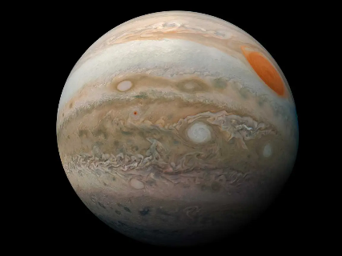
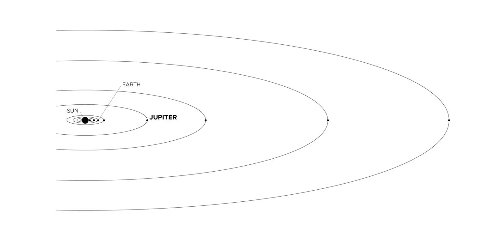

Jupiter's signature stripes and swirls are actually cold, windy clouds of ammonia and water, floating in an atmosphere of hydrogen and helium. The dark orange stripes are called belts, while the lighter bands are called zones, and they flow east and west in opposite directions. Jupiter's iconic Great Red Spot is a giant storm bigger than Earth that has raged for hundreds of years.
The king of planets was named for Jupiter, king of the gods in Roman mythology. Most of its moons are also named for mythological characters, figures associated with Jupiter or his Greek counterpart, Zeus.
Jupiter, being the biggest planet, gets its name from the king of the ancient Roman gods.
Jupiter's environment is probably not conducive to life as we know it. The temperatures, pressures, and materials that characterize this planet are most likely too extreme and volatile for organisms to adapt to.
While planet Jupiter is an unlikely place for living things to take hold, the same is not true of some of its many moons. Europa is one of the likeliest places to find life elsewhere in our solar system. There is evidence of a vast ocean just beneath its icy crust, where life could possibly be supported.
With a radius of 43,440.7 miles (69,911 kilometers), Jupiter is 11 times wider than Earth. If Earth were the size of a grape, Jupiter would be about as big as a basketball.
From an average distance of 484 million miles (778 million kilometers), Jupiter is 5.2 astronomical units away from the Sun. One astronomical unit (abbreviated as AU), is the distance from the Sun to Earth. From this distance, it takes sunlight 43 minutes to travel from the Sun to Jupiter.

upiter has the shortest day in the solar system. One day on Jupiter takes only about 10 hours (the time it takes for Jupiter to rotate or spin around once), and Jupiter makes a complete orbit around the Sun (a year in Jovian time) in about 12 Earth years (4,333 Earth days).
Its equator is tilted with respect to its orbital path around the Sun by just 3 degrees. This means Jupiter spins nearly upright and does not have seasons as extreme as other planets do.
With four large moons and many smaller moons, Jupiter forms a kind of miniature solar system.
Jupiter has 95 moons that are officially recognized by the International Astronomical Union. The four largest moons – Io, Europa, Ganymede, and Callisto – were first observed by the astronomer Galileo Galilei in 1610 using an early version of the telescope. These four moons are known today as the Galilean satellites, and they're some of the most fascinating destinations in our solar system.
Io is the most volcanically active body in the solar system. Ganymede is the largest moon in the solar system (even bigger than the planet Mercury). Callisto’s very few small craters indicate a small degree of current surface activity. A liquid-water ocean with the ingredients for life may lie beneath the frozen crust of Europa, the target of NASA's Europa Clipper mission slated to launch in 2024.
Discovered in 1979 by NASA's Voyager 1 spacecraft, Jupiter's rings were a surprise. The rings are composed of small, dark particles, and they are difficult to see except when backlit by the Sun. Data from the Galileo spacecraft indicate that Jupiter's ring system may be formed by dust kicked up as interplanetary meteoroids smash into the giant planet's small innermost moons.
upiter took shape along with rest of the solar system about 4.5 billion years ago. Gravity pulled swirling gas and dust together to form this gas giant. Jupiter took most of the mass left over after the formation of the Sun, ending up with more than twice the combined material of the other bodies in the solar system. In fact, Jupiter has the same ingredients as a star, but it did not grow massive enough to ignite.
About 4 billion years ago, Jupiter settled into its current position in the outer solar system, where it is the fifth planet from the Sun.
The composition of Jupiter is similar to that of the Sun – mostly hydrogen and helium. Deep in the atmosphere, pressure and temperature increase, compressing the hydrogen gas into a liquid. This gives Jupiter the largest ocean in the solar system – an ocean made of hydrogen instead of water. Scientists think that, at depths perhaps halfway to the planet's center, the pressure becomes so great that electrons are squeezed off the hydrogen atoms, making the liquid electrically conducting like metal. Jupiter's fast rotation is thought to drive electrical currents in this region, with the spinning of the liquid metallic hydrogen acting like a dynamo, generating the planet's powerful magnetic field.
Deeper down, Jupiter's central core had long been a mystery. Scientists theorized Jupiter was a mostly homogeneous mix of hydrogen and helium gases, surrounding a small, solid core of heavier elements – ice, rock, and metal formed from debris and small objects swirling around that area of the embryonic solar system 4 billion years ago.
NASA's Juno spacecraft, measuring Jupiter's gravity and magnetic field, found data suggesting the core is much larger than expected, and not solid. Instead, it's partially dissolved, with no clear separation from the metallic hydrogen around it, leading researchers to describe the core as dilute, or “fuzzy.”
As a gas giant, Jupiter doesn't have a true surface. The planet is mostly swirling gases and liquids. While a spacecraft would have nowhere to land on Jupiter, it wouldn’t be able to fly through unscathed either. The extreme pressures and temperatures deep inside the planet crush, melt, and vaporize spacecraft trying to fly into the planet.
Jupiter's appearance is a tapestry of colorful stripes and spots – the cloud bands that encircle the planet, and the cyclonic storms dotting it from pole to pole. The gas planet likely has three distinct cloud layers in its "skies" that, taken together, span about 44 miles (71 kilometers). The top cloud is probably made of ammonia ice, while the middle layer is likely made of ammonium hydrosulfide crystals. The innermost layer may be made of water ice and vapor.
The vivid colors you see in thick bands across Jupiter may be plumes of sulfur and phosphorus-containing gases rising from the planet's warmer interior. Jupiter's fast rotation – spinning once every 10 hours – creates strong jet streams, separating its clouds into dark belts and bright zones across long stretches.
With no solid surface to slow them down, Jupiter's spots can persist for many years. Stormy Jupiter is swept by over a dozen prevailing winds, some reaching up to 335 miles per hour (539 kilometers per hour) at the equator. The Great Red Spot, a swirling oval of clouds twice as wide as Earth, has been observed on the giant planet for more than 300 years. More recently, three smaller ovals merged to form the Little Red Spot, about half the size of its larger cousin.
Findings from NASA's Juno probe released in October 2021 provide a fuller picture of what's going on below those clouds. Data from Juno shows that Jupiter's cyclones are warmer on top, with lower atmospheric densities, while they are colder at the bottom, with higher densities. Anticyclones, which rotate in the opposite direction, are colder at the top but warmer at the bottom.
The findings also indicate these storms are far taller than expected, with some extending 60 miles (100 kilometers) below the cloud tops and others, including the Great Red Spot, extending over 200 miles (350 kilometers). This surprising discovery demonstrates that the vortices cover regions beyond those where water condenses and clouds form, below the depth where sunlight warms the atmosphere.
The height and size of the Great Red Spot mean the concentration of atmospheric mass within the storm potentially could be detectable by instruments studying Jupiter's gravity field. Two close Juno flybys over Jupiter's most famous spot provided the opportunity to search for the storm's gravity signature and complement the other results on its depth.
With their gravity data, the Juno team was able to constrain the extent of the Great Red Spot to a depth of about 300 miles (500 kilometers) below the cloud tops.
Belts and Zones In addition to cyclones and anticyclones, Jupiter is known for its distinctive belts and zones – white and reddish bands of clouds that wrap around the planet. Strong east-west winds moving in opposite directions separate the bands. Juno previously discovered that these winds, or jet streams, reach depths of about 2,000 miles (roughly 3,200 kilometers). Researchers are still trying to solve the mystery of how the jet streams form. Data collected by Juno during multiple passes reveal one possible clue: that the atmosphere's ammonia gas travels up and down in remarkable alignment with the observed jet streams.
Juno's data also shows that the belts and zones undergo a transition around 40 miles (65 kilometers) beneath Jupiter's water clouds. At shallow depths, Jupiter's belts are brighter in microwave light than the neighboring zones. But at deeper levels, below the water clouds, the opposite is true ' which reveals a similarity to our oceans.
Polar Cyclones Juno previously discovered polygonal arrangements of giant cyclonic storms at both of Jupiter's poles – eight arranged in an octagonal pattern in the north and five arranged in a pentagonal pattern in the south. Over time, mission scientists determined these atmospheric phenomena are extremely resilient, remaining in the same location.
Juno data also indicates that, like hurricanes on Earth, these cyclones want to move poleward, but cyclones located at the center of each pole push them back. This balance explains where the cyclones reside and the different numbers at each pole.
The Jovian magnetosphere is the region of space influenced by Jupiter's powerful magnetic field. It balloons 600,000 to 2 million miles (1 to 3 million kilometers) toward the Sun (seven to 21 times the diameter of Jupiter itself) and tapers into a tadpole-shaped tail extending more than 600 million miles (1 billion kilometers) behind Jupiter, as far as Saturn's orbit. Jupiter's enormous magnetic field is 16 to 54 times as powerful as that of the Earth. It rotates with the planet and sweeps up particles that have an electric charge. Near the planet, the magnetic field traps swarms of charged particles and accelerates them to very high energies, creating intense radiation that bombards the innermost moons and can damage spacecraft.
Jupiter's magnetic field also causes some of the solar system's most spectacular aurorae at the planet's poles.